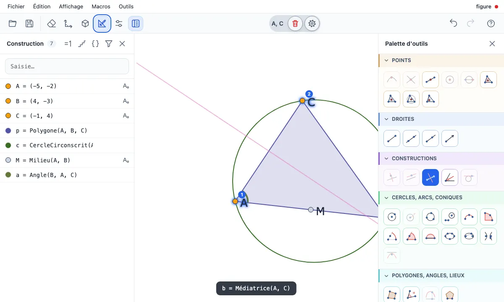

La palette d’outils

Ouvrir la palette
- de la barre, ou Affichage › Palette d’outils, ouvre à droite tous les outils, à plat, par familles aux couleurs de l’anneau, et en dernier les macros de la figure.
- La palette est visible au premier lancement. Son état ouvert ou fermé est ensuite mémorisé dans ce navigateur pour les prochains lancements.
- Elle prend la place du panneau de propriétés : ouvrir l’un ferme l’autre, sans lâcher l’outil en main.
- Un clic sur le titre d’une famille la replie ou la déplie ; DocGeo s’en souvient.
- Échap lâche l’outil ou la sélection, puis ferme la palette.
- Sur un petit écran, la palette recouvre la figure et se ferme dès qu’on choisit un outil. Sous 500 px de large, son bouton passe de la barre à la droite de la ligne de saisie.
Construire avec un outil
- Un clic sur un outil le prend ; enfoncé, un nouveau clic le lâche.
- La palette contient tous les outils de l’anneau et d’autres (badge anneau ci-dessous). Les familles Plans et Solides et les outils marqués 3D n’apparaissent qu’en vue 3D.
- La famille Programmes, absente de l’anneau, crée des tortues, des boutons et des programmes d’événements (voir Blocs et tortue).
- Palette ouverte, un clic sur un objet le sélectionne sans ouvrir d’anneau, et un clic dans le vide le désélectionne. Les outils qui ne prennent pas l’objet, ou la sélection multiple, sont grisés.
- Survoler un outil affiche sa ligne dans la consigne. Si les objets sélectionnés lui suffisent, l’objet qu’il construirait apparaît en pâle.
- Le premier objet désigné prend n’importe quelle place que son type accepte : pour une perpendiculaire, la droite peut venir avant le point.
- Les arguments se désignent aussi dans le panneau « Construction » : les lignes des objets que l’outil accepte y sont surlignées en vert, les autres pâlies. Un objet caché s’y désigne aussi. Un point ne s’y désigne que s’il existe déjà, et deux objets y donnent tous leurs points d’intersection. Tant que l’outil est en main, un clic sur une ligne ne la modifie pas. Une ligne déjà désignée passe en bleu, avec sa place dans la commande (1, 2…).
- L’outil est persistant : après chaque objet, il attend de nouveau son premier argument. Son bouton reste enfoncé et la barre affiche un bandeau avec Terminé.
- Un argument désigné avec Maj est gardé : l’outil le reprend après chaque objet, jusqu’à ce qu’on le quitte. Maj-clic sur l’axe d’une symétrie, puis un clic sur chaque objet à transformer ; de même le centre de cercles concentriques. Le bouton Garder d de la consigne fait de même (au doigt notamment) ; Changer d le redemande. Ni pour l’outil de l’anneau, ni pour les objets sélectionnés avant l’outil.
- Sortie : Terminé, Échap, ✕ de la consigne, un nouveau clic sur l’outil, la gomme, le pas à pas, ou un clic dans la ligne de saisie. Annuler, refaire, les propriétés et la vue 3D gardent l’outil.
Avec une sélection
Des objets sélectionnés d’abord deviennent les arguments de l’outil choisi : voir Construire par sélection multiple.
Transformer un objet
- Une transformation prend d’abord ce qui la définit (centre, axe, vecteur, cercle), puis le point ou l’objet à transformer : segment, droite, demi-droite, vecteur, polygone, cercle, arc, conique, courbe de fonction, lieu ; en 3D aussi un plan, une sphère, un polyèdre (sauf par une inversion).
- Sous le pointeur, un point l’emporte, puis l’objet ; dans le vide, un point est créé. Le survol montre l’image en pâle.
- L’image est de même nature que l’objet : un polygone pour un polygone, un cercle pour un cercle… Une courbe de fonction, un lieu ou un arc de conique ont pour image un lieu.
- Par une inversion, une droite ou un cercle a pour image un cercle, ou une droite s’il passe par le centre ; un polygone, un polygone aux côtés courbes.
- L’image reprend la couleur, le remplissage, la taille, l’opacité et le pointillé de son objet. Elle ne se glisse pas, mais un point peut s’y poser.
- Pour transformer plusieurs objets, désigner le centre ou l’axe avec Maj (argument gardé).
Tous les outils
Pour chaque outil : ce qu’on désigne, puis la ligne écrite.
Points
-
PointanneauLe point que l’on touche : libre dans le vide, sur un objet, ou à l’intersection de deux objets.
Point(c, t) -
IntersectionanneauUn croisement d’un seul toucher : ce point ; ou les deux objets l’un après l’autre : tous leurs points d’intersection, comme dans GeoGebra (deux d’une droite et d’un cercle, même s’ils ne se coupent pas encore).
Intersection(a, b) -
MilieuanneauDeux points, ou un segment.
Milieu(A, B) -
CentreanneauUn cercle : son centre.
Centre(c) -
AutreIntersectionDeux objets, puis un point déjà placé sur l’une de leurs intersections : le point d’intersection le plus éloigné de lui.
AutreIntersection(a, b, P) -
CentreInscritTrois points, sommets d’un triangle : le centre de son cercle inscrit.
CentreInscrit(A, B, C) -
CentreGravitéTrois points : le centre de gravité du triangle.
CentreGravité(A, B, C) -
CentreCirconscritTrois points : le centre du cercle circonscrit.
CentreCirconscrit(A, B, C) -
OrthocentreTrois points : l’orthocentre du triangle.
Orthocentre(A, B, C)
Droites
-
SegmentanneauDeux points, ses extrémités.
Segment(A, B) -
DroiteanneauDeux points de la droite.
Droite(A, B) -
DemiDroiteanneauDeux points : l’origine, puis un point de la demi-droite.
DemiDroite(A, B) -
VecteuranneauDeux points : l’origine, puis l’extrémité.
Vecteur(A, B)
Constructions
-
PerpendiculaireanneauUn point et une droite, dans l’ordre que l’on veut. En 3D, une droite ou un plan.
Perpendiculaire(P, d) -
ParallèleanneauUn point et une droite, dans l’ordre que l’on veut.
Parallèle(P, d) -
MédiatriceanneauDeux points, ou un segment.
Médiatrice(A, B) -
BissectriceanneauTrois points : un point du premier côté, le sommet, un point du second côté.
Bissectrice(A, O, B) -
TangenteUn point, puis un cercle, une conique ou la courbe d’une fonction. L’outil donne la tangente n° 1 ; changez ce numéro en 2 dans sa ligne pour l’autre.
Tangente(P, c, 1)
Cercles, arcs, coniques
-
Cercle (centre et point)anneauLe centre, puis un point du cercle.
Cercle(O, A) -
Cercle (centre et rayon)anneauLe centre seul : dans l’anneau, maintenir l’icône appuyée, déplacer la souris ou le doigt puis relâcher pour fixer le rayon. Depuis le menu ou la palette, le rayon initial est d’environ 150 pixels. Il se change ensuite en glissant le cercle ou dans sa ligne.
-
CercleCirconscritanneauTrois points du cercle.
CercleCirconscrit(A, B, C) -
CompasDeux points qui donnent le rayon, puis le centre.
Compas(A, B, O) -
Cercle (centre, direction et rayon)3DLe centre, puis une droite (l’axe) ou un plan (parallèle au cercle), le sol compris. Rayon d’environ 150 pixels.
Cercle(O, 3.8, d) -
Cercle (axe et point)3DUne droite, l’axe, puis un point du cercle.
Cercle(d, P) -
ArcTrois points : le début, un point de passage, la fin (en 3D, dans leur plan). Ou un cercle ou une ellipse, puis le début et la fin (sens direct).
Arc(A, B, C),Arc(c, P, Q) -
SecteurComme l’arc, trois points, ou un cercle ou une ellipse et deux points : le secteur qu’il délimite.
Secteur(A, B, C),Secteur(c, P, Q) -
ArcCentreLe centre, le début, puis un point de la demi-droite où l’arc s’arrête (sens direct). En 3D, l’arc de l’angle AMB, dans son plan.
ArcCentre(M, A, B) -
SecteurCentreComme ArcCentre : le secteur.
SecteurCentre(M, A, B) -
DemiCercleDeux points, extrémités du diamètre : le demi-cercle à gauche de [AB].
DemiCercle(A, B) -
ConiqueCinq points de la conique. Dès le deuxième, l’aperçu montre la conique la plus proche d’un cercle.
Conique(A, B, C, D, E) -
EllipseLes deux foyers, puis un point de l’ellipse.
Ellipse(F, G, P) -
HyperboleLes deux foyers, puis un point de l’hyperbole.
Hyperbole(F, G, P) -
ParaboleLe foyer, puis la directrice.
Parabole(F, d)
Polygones, angles, lieux
-
PolygoneanneauLes sommets un à un, puis de nouveau le premier pour fermer.
Polygone(A, B, C) -
AngleanneauTrois points : un point du premier côté, le sommet, un point du second côté.
Angle(A, O, B) -
LieuanneauUn point qui dépend d’un point sur objet : son lieu quand ce point parcourt son objet.
Lieu(M, P) -
PolygoneRégulierDeux sommets consécutifs : l’outil donne un carré ; changez le nombre de côtés dans sa ligne.
PolygoneRégulier(A, B, 4)
Transformations
-
Symétrie centraleanneauLe centre, puis le point ou l’objet à transformer.
Symétrie(O, P) -
Symétrie axialeanneauL’axe, puis le point ou l’objet à transformer.
Symétrie(d, P) -
RotationLe centre, puis le point ou l’objet : un quart de tour, que l’on change dans sa ligne.
Rotation(O, P, 90) -
TranslationLe vecteur, puis le point ou l’objet.
Translation(u, P) -
HomothétieLe centre, puis le point ou l’objet : un rapport de 2, que l’on change dans sa ligne.
Homothétie(O, P, 2) -
InversionLe cercle d’inversion, puis le point ou l’objet.
Inversion(c, P)
Plans
-
Plan3DTrois points, ou un point et une droite.
Plan(A, B, C) -
PlanParallèle3DUn point et un plan (le sol compris) : le plan parallèle passant par le point.
PlanParallèle(A, p) -
PlanOrthogonal3DUn point et une droite : le plan orthogonal à la droite.
PlanOrthogonal(A, d)
Solides
-
Sphèreanneau3DLe centre, puis un point de la sphère.Dans l’anneau d’un point, cet outil est près des cercles.
Sphère(O, A) -
Cylindre3DDeux points, extrémités de l’axe. Rayon d’environ 150 pixels.
Cylindre(A, B, 3.8) -
Cône3DLe centre de la base, puis le sommet. Rayon d’environ 150 pixels.
Cône(A, B, 3.8) -
Cube3DDeux points d’un même plan ou de même cote, sinon trois points (voir la 3D).
Cube(A, B, C) -
Prisme3DUn polygone, la base, puis un point, sommet de la face opposée.
Prisme(p, P) -
Pyramide3DUn polygone, la base, puis le sommet.
Pyramide(p, S) -
Section3DUn solide (sphère, cylindre, cône, polyèdre) et un plan, dans l’ordre que l’on veut.
Section(s, p) -
Patron3DUn cube, un prisme ou une pyramide : son patron à plat.
Patron(c, 1)
Programmes
-
TortueUn point, ou un endroit vide qui en crée un : la tortue qui part de ce point, ouverte en blocs.
TURTLE_INIT("A", A) -
BoutonL’endroit de sa flèche : le bouton, son programme ouvert en blocs.
Bouton("Lancer") -
Quand l’objet est glisséUn point déplaçable : le programme lancé quand on le glisse, ouvert en blocs.
-
Quand l’objet est appuyéUn point déplaçable : le programme lancé quand on l’appuie, ouvert en blocs.
-
Quand l’objet est lâchéUn point déplaçable : le programme lancé quand on le lâche, ouvert en blocs.
-
Quand la valeur changeUne expression : le programme lancé quand sa valeur change, ouvert en blocs.
Macros
-
Nouvelle macroLes objets sélectionnés en premiers initiaux : la définition d’une macro ; les macros de la figure suivent (voir Les macros).
Les transformations construisent l’image d’un point ou d’un
objet (voir
Transformer un objet). Au
clavier seulement : PointFixe, Sommet,
Curseur, Liste, les intersections de
l’espace, Ellipse(F, G, a) et
Hyperbole(F, G, a) (voir
Les commandes).